How Value Flows from the Job Graph
An Introduction to Advanced Jobs To Be Done
- — Anna Petrova (technical review)
- — Mikhail Sokolov (editing)
- — Sarah Chen (copy-editing)
- — Dmitry Ivanov (illustrations)
What this chapter is about
- If you've heard about Jobs To Be Done and you're looking for ways to apply it in practice
- If you want to learn how to create product value
- If you've heard the term Advanced Jobs To Be Done and want to know what it actually means
Introduction
Jobs To Be Done is a beautiful and powerful theory. But what's the point of theory if it doesn't help you make better decisions?
The goal of Advanced Jobs To Be Done (AJTBD) is to give you algorithms for solving the business problems product teams actually face — and to answer the questions that come up when you launch and grow a product.
AJTBD is a practical extension of JTBD. To get from "JTBD is a beautiful idea" to "JTBD that solves business problems," I spent five years searching for answers to what is product value, and how do you create it? and how do you make strategic decisions? I had to connect needs to goals to emotions, account for the brain's predictive function, develop a methodology for interviews and research, and tie all of it back to the problems a product team needs to solve every week.
In this chapter you'll meet the foundational principles of AJTBD. You'll learn that product value is the ability to perform a customer's Jobs more energy-efficiently; you'll meet a new unit of analysis — the Job Graph; you'll see how the Job Graph generates algorithms for solving business problems; and you'll see where AJTBD does and doesn't apply.
Everyone says "create value" — nobody explains how
In the previous chapter we established that a Job is the root cause of any human action or purchase, and that Jobs are the expected outcomes the brain formulates to satisfy needs. So in segmentation, and in any product decision, we have to account for the customer's Jobs.See Chapter 2 — Needs, goals, and the brain's predictive model for the full argument.
But knowing the Jobs isn't enough. We have to offer the customer something that makes them choose our product over a competitor's.
Needs are the root cause of all action, but most people don't consciously notice them. The brain formulates goals to satisfy needs, and the goals are at least somewhat conscious. Goals = Jobs in AJTBD. But we still don't know how to make the customer pick our product. Presumably, value plays an important role in that choice.
But the overwhelming majority of product builders have no operational understanding of how to create value, and that creates a low-grade frustration around the whole question.
Most people don't actually know the cause-and-effect chain that leads to a purchase. AJTBD describes that chain end-to-end and gives an algorithm for creating value.
Fair. The proof is in the algorithm — by the end of this chapter you'll have one. If it doesn't help you make a single concrete decision differently than you would today, throw the book at the wall.
The Job Graph
The Job Graph is the hierarchy of Jobs a person performs in order to satisfy their needs.
The Job Graph is the second unit of analysis in AJTBD (the first is the Job itself) and it is one of the main differences from classical JTBD.
A quick note: "graph" is a math term, not a noble title.
From understanding and reshaping the Job Graph, you derive value, product strategy, and the algorithms for solving business problems: which segment to launch a new product into, how to grow conversion to payment, how to retain and reactivate customers, how to grow average revenue per user, how to escape direct competition, how to build disruptive products, and so on.
If you take any sufficiently complex Job, you'll find that to perform it — if the person decides to do everything themselves — they have to perform a number of sub-Jobs. They can't not choose where to fly, buy tickets, book a hotel, and actually take the trip. AJTBD calls these "Jobs at a lower level." They're performed in order to perform a "Job at a higher level."
The Job Graph can have many levels of nesting.
I use the term "graph" because Jobs often have many-to-many relationships. The Job "hire a competent leader" may be performed by a CEO in order to perform several higher-level Jobs at once: "keep my strong people", "grow sales", and "take some load off me."
A real customer's Job Graph is determined by two things:
- The structure of the Job Graph that the creators of the solution baked into it.
- The customer's choice of which solution to use to perform the Job.
These two principles of how Job Graphs form are what value and strategy flow from. We'll come back to them throughout this chapter.
If for the same Job "have a relaxing beach vacation" the customer had picked the solution "tour operator" instead of "do everything myself", they would have to perform a completely different set of lower-level Jobs.
If you tried to map the graph of all the Jobs of one person, you'd lose count after a few hundred. But — good news — you don't need to know the full Job Graph of a person, and you certainly don't need the full graph of all people. At any given moment, to solve your specific business problem, you only need a small slice of the graph.
AJTBD gives an algorithm for figuring out which slice to study for which business problem.
Suppose you're building a new residential development for a real-estate developer. It makes no sense to study every Job of every person on Earth. From the entire Job Graph, what's actually valuable is the critical sequence of Jobs around buying, renovating, and moving into an apartment — for your focus segments only.
What is value?
"What is product value, and how do I create it?" is one of the most important questions any product builder must be able to answer. Two years ago I realized I didn't have a good answer — and that the books I'd read on product management, economics, and behavioral psychology didn't either. So I had to do my own research.
Economics textbooks claim that value = benefit – cost.
"The brain's primary job is to predict and manage the body's metabolic resources. Perception, emotion, and action are all consequences of that predictive energy management."
— Lisa Feldman Barrett, Seven and a Half Lessons About the Brain, 2020
If Barrett is right, the brain is, above all else, a resource manager. It manages water, oxygen, glucose, fats, minerals, neurotransmitters — and it manages them like an investor: it spends X units of energy now in expectation of getting 3X in return — for instance, "I'll figure out Advanced Jobs To Be Done [investment] → I'll be able to solve harder problems and earn a promotion → I'll feel financially safer and live better [return]."
The brain spends energy in order to satisfy needs and perform the Jobs it has set itself.
So suppose a person has a Job — a goal the brain has formulated to satisfy a need. They learn about the solutions available for performing that Job. If we are among those solutions, and if we look like the best investment — the most energy-efficient choice — they will pick us over the competition.
Value is performing the customer's Jobs more energy-efficiently than the alternatives.
“Value is performing the customer’s Jobs more energy-efficiently than the alternatives.”
In other words, "value" is the proposition: we will perform your Job for fewer of your resources (money, time, effort) and deliver more in return (the Job done better, or more Jobs done, or your needs more fully met, or you feeling calmer, more satisfied, more delighted) — better than the competition.
But the formula value = benefit – cost doesn't explain two important phenomena: the existence of "problems" and the surprise we feel when something is genuinely valuable.
Suppose a CMO performs the Job "bring in leads at target cost and conversion" using the solution "marketing agency X". They've worked together for years and never thought twice about it. Recently, though, the leads have started to drop in quality. When the CMO notices, they're surprised (there were no problems for years) and angry (I have targets to hit). That's a "problem." The CMO is getting less value because they're paying the same money for less benefit.
But a problem is more than just less value. A problem is a signal that the brain's predictive model was wrong. Our brains constantly predict first, then simulate, then compare the prediction to actual sensory information. A problem is the gap between what the brain expected and what actually happened.
A thesis we'll come back to repeatedly: expectations (often unconscious) play a critical role in how the brain assesses the value of a particular solution.
I believe the formula for value must account for expectations. I just don't yet know how to formalize that.
How value flows from the Job Graph
Knowing that value = "performing Jobs more energy-efficiently" doesn't, by itself, do anything for you. You need a repeatable algorithm for creating value.
If you overlay the brain's drive toward energy-efficiency onto the Job Graph, it turns out that ABSOLUTELY EVERY successful product decision ever made can be explained as the optimization of a Job Graph.
Even simpler: value is created by transforming and simplifying the Job Graph.
The example below tells one story — how American gas stations slowly evolved from "a place to fill up" into "a place to refuel a road trip." Each frame is one mechanic of value creation applied on top of the previous Job Graph.
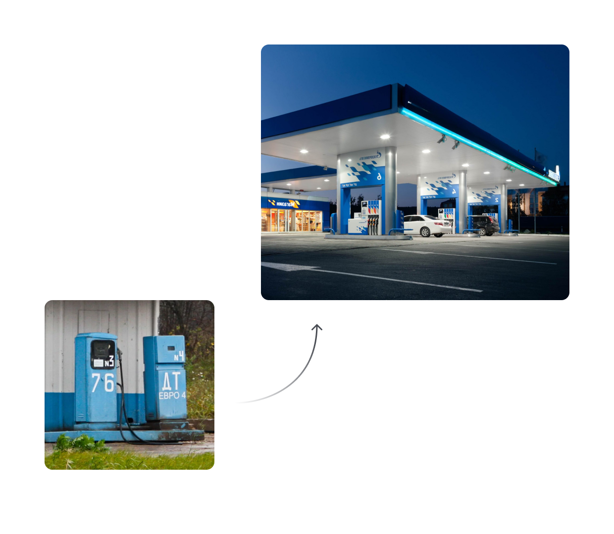
Imagine our hero is driving from New York to Boston. They didn't sleep well and want a coffee to stay alert. They want a full tank so they don't have to think about fuel for the next seven hours of driving. These are lower-level Jobs in service of the higher-level Job "get to Boston safely."
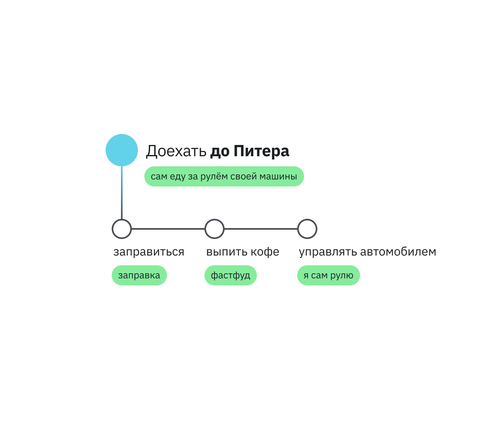
They pull into their usual Shell station. Their brain has automatically and unconsciously predicted the value, the cost, the benefit, the sub-Jobs they'll have to perform.
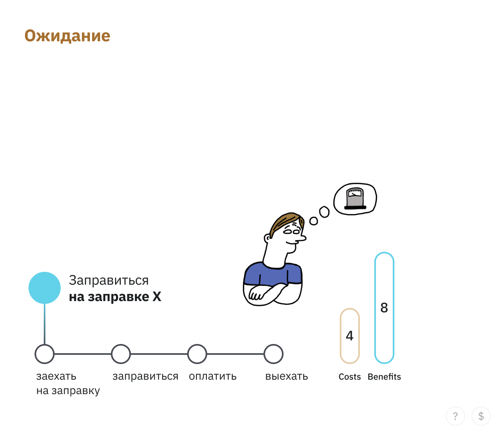
Pull in. There's no fuel. That's a "problem."
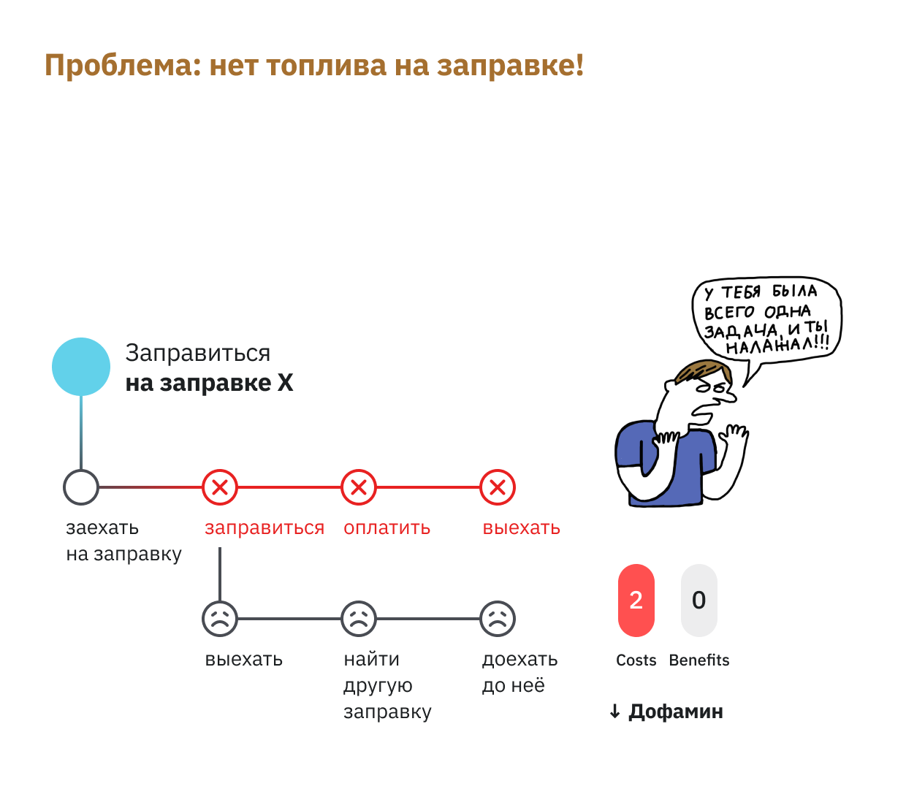
Let's break down what a "problem" actually is:
- The Job isn't getting done, and the person feels negative emotions because they spent time and effort and got nothing.
- They feel a dopamine dip because their predictive model was wrong.
- They now have to perform extra Jobs to complete the higher-level Job. I call these "Tax Jobs."
The first value mechanic I want to introduce is "fix problems." We all intuitively understand this one, but now you can see why it's valuable: fixing a problem removes the negative emotions caused by an unfinished Job, removes the dopamine dip, and removes the Tax Jobs the customer would otherwise have to perform.
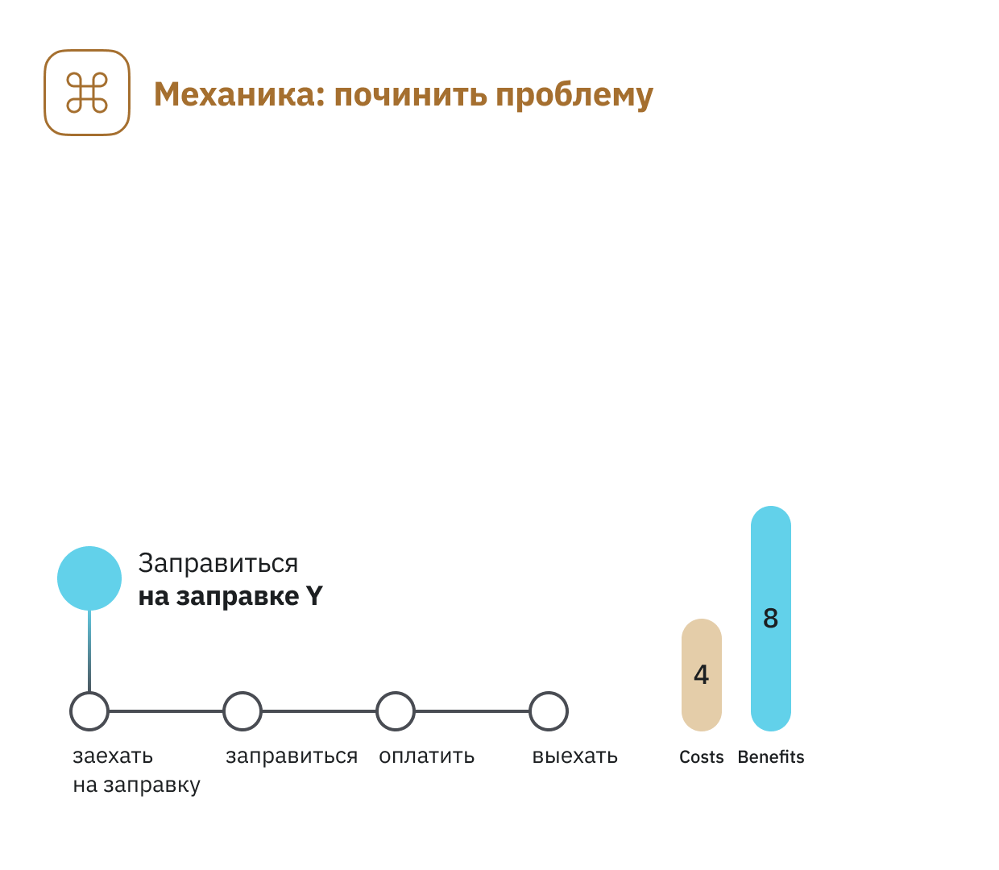
Now let's understand why coffee shops appeared at gas stations. Our hero wants both fuel and coffee. With the old solutions, they had to drive to two different places.
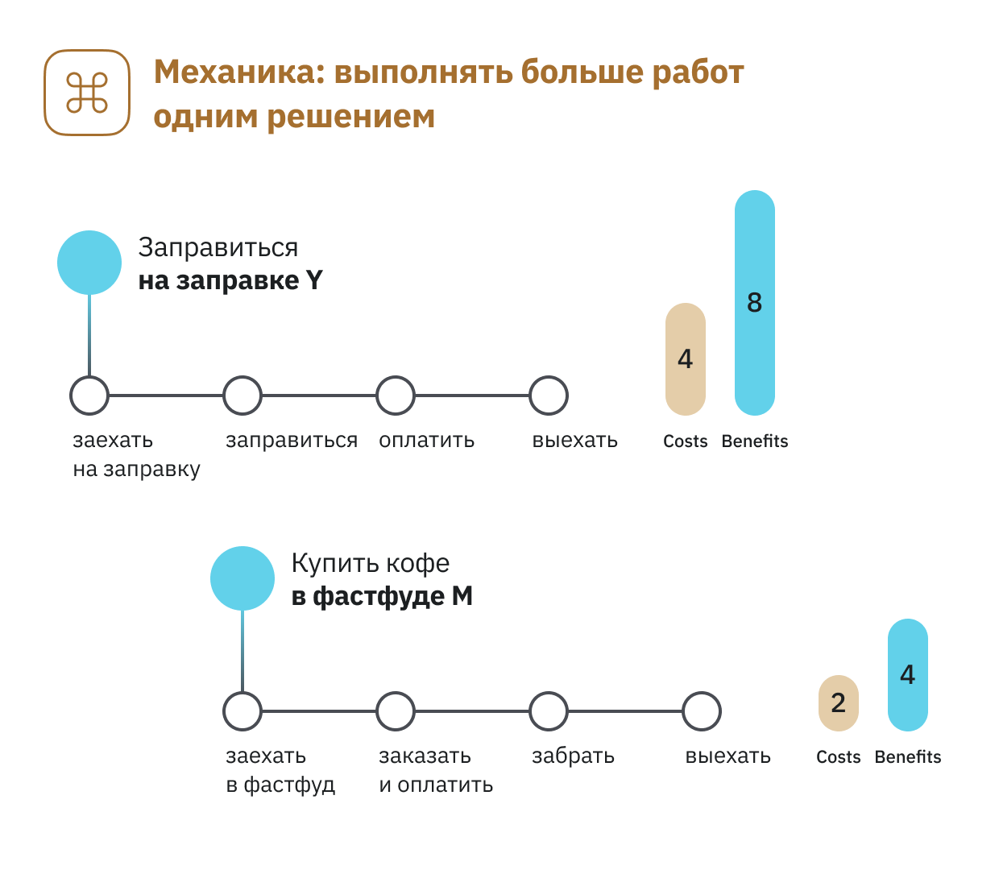
But if you find a way to make two of a person's Jobs be performed for less total investment, the person may consider your solution as an alternative to the two old ones. We're summing the benefits and reducing the cost across both Jobs.
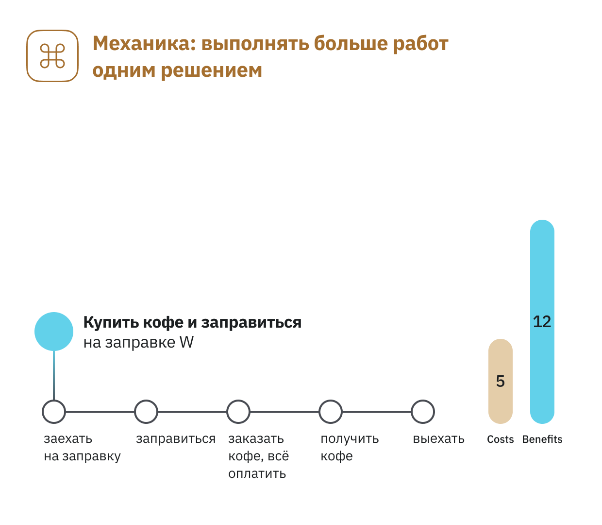
Now meet the mechanic behind "simplifying" a product. If you find a way to perform the same higher-level Job with fewer lower-level Jobs — that is, you "kill" some Jobs — then when the person discovers and tries the new simplified solution, they'll be pleasantly surprised. Their predictive model returns a positive prediction error: they thought it would be straightforward, and it turned out easier. Positive emotions plus a dopamine spike give you a satisfaction lift and an increase in the probability they'll use your product again.
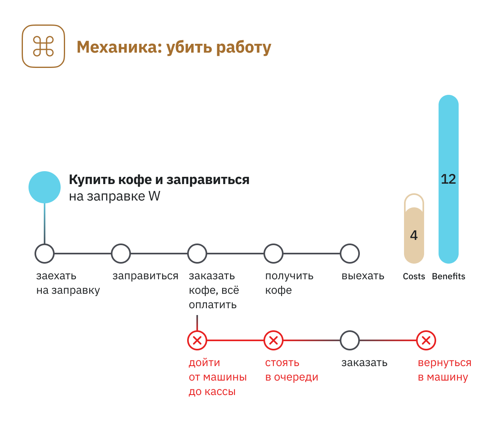
As you can see, a problem is directly tied to the Job Graph, the brain's predictive model, and the emotions that signal an important Job is unfinished or being done badly.
"Simpler", "easier", "more convenient" — these are ALWAYS the killing of Jobs.
This gives us the following algorithm for creating value:
- Study the Job Graphs of your focus segments with their current solutions — including the problems they hit and the expectations they hold.
- Generate hypotheses for which value mechanics you can apply on top of those graphs.
- Rank those mechanics by:
- higher levels in the graph
- Jobs in the critical sequence
- Jobs in the critical sequence that are performed worst, or where you see the largest customer drop-off
I currently see more than 20 mechanics for value creation, including:
Base mechanics:
- Start performing a Job that wasn't being performed at all
- Fix problems
- Perform more Jobs with one solution
- Kill Jobs
- Reduce delays between performing Jobs
- Lower the cost without killing the Job (cheaper)
Composite mechanics:
- Climb to the next-higher Job
- Take the Job off the person entirely
- Split the benefit and deliver part of it earlier
- And many others
The master mechanic of value creation is killing Jobs — it sits at the root of many (if not all) of the others.
Of course, value also includes "make it cheaper" or "give more benefit." Those are mechanics too.
The baseline quality is: hit the brain's prediction of the graph, the costs, and the benefits.
If the resulting Job Graph the person walks through is simpler, the investment smaller, the benefit larger relative to expectations — they say "wow", feel positive emotions, and the brain rewards itself with dopamine.
If the resulting graph is more complex, the investment larger, the benefit smaller relative to expectations — they feel negative emotions, call it a "bad experience", and feel a dopamine dip below baseline, which is unpleasant.
What's new is the unit of analysis. UX talks about flows and screens; AJTBD talks about Jobs and graphs. A flow is a recording of one person doing one thing on one product. A graph is the space of Jobs across solutions, in which your product is one node and your competitors are others. You can't see the move "climb a level" on a flow — there's no level in a flow, just steps. You can only see it on a graph. Most of the strategic moves in this book are invisible on a flow.
The algorithm for solving business problems
Business problems are solved by an algorithm of applying value mechanics to the Job Graphs of specific segments. The algorithm is closely related to the value-creation algorithm above.
The same energy-optimization principle, applied at higher levels of the graph and across segments grouped by higher-level Jobs, gives us strategic decisions.
Have you ever thought about what, exactly, you find in discovery?
You find opportunities to create value for customers while simultaneously solving your own business problems, for segments of people grouped by their Jobs, by applying one of the mechanics on top of their Job Graphs.
Qualitative (customer-development) and quantitative methods are tools to gather information about Job-based segments and their graphs — and the opportunities to apply mechanics on them.
Different business problems call for different mechanics. I currently see about 50 mechanics for solving business problems.
Depending on the active business problem — find a segment, escape competition, grow market share, enter a new market, reduce churn, increase reactivation, grow ARPU, etc. — and depending on the structure of the graph and the customer's behavior in it, you choose which slices of which graphs you compete for. That choice is product strategy.
Let's look at examples of strategic moves real products have made.
Mechanic — "climb to the previous Job"
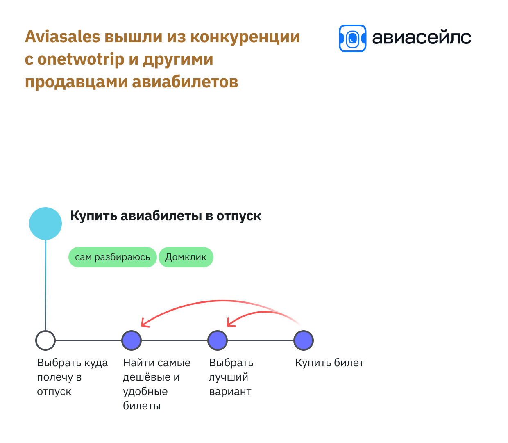
Aviasales1 doesn't compete with sites that sell tickets. It performs the previous Job: "find the cheapest, most convenient tickets." Its business model lets it find cheaper tickets and offer wider supply than any individual ticket-selling site can.
Mechanic — "climb to the previous Job"
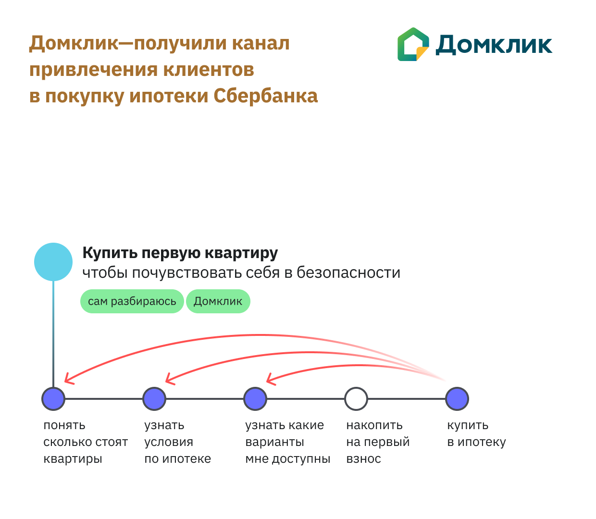
Sberbank (the Russian Chase-equivalent in scale; US analog: Chase / Wells Fargo) launched Domklik as a solution for the previous Jobs of people who buy apartments. Because some buyers now run mortgage calculations, search for apartments, and submit loan applications inside Domklik, Sberbank effectively built a lead funnel into its core mortgage product.
Mechanic — "climb to the higher-level Job"
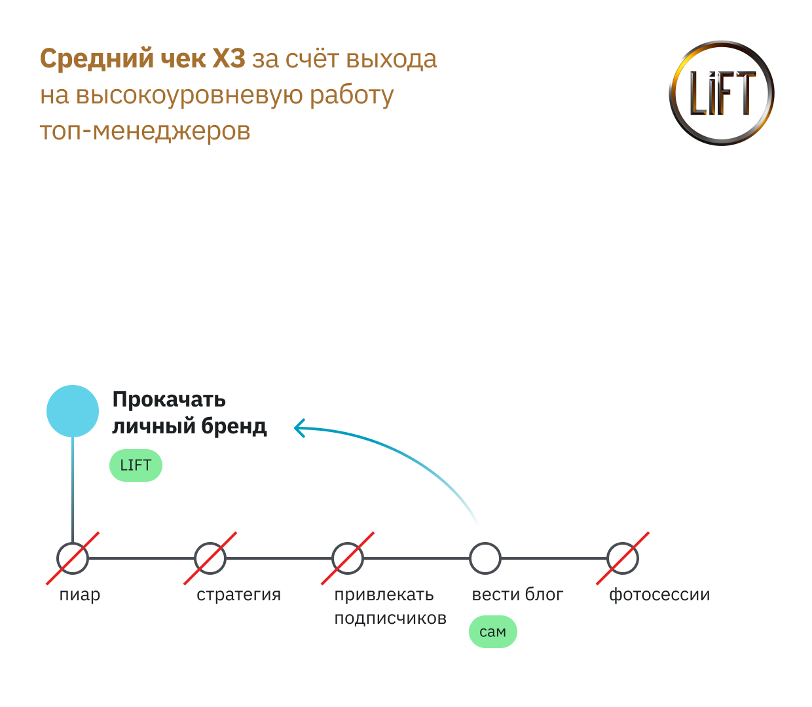
Anastasia Gusenstova, founder of LiFT — a personal-brand consultancy in Russia (think a high-touch version of Brand Builders Group or Wasserman) — found a segment of senior executives willing to pay 450,000 rubles/month (~$5,000) for personal-brand work, where the core value is "do everything for me." Instead of offering a list of services, LiFT killed most of the lower-level Jobs and effectively climbed to the higher-level Job for these executives: "run my personal brand."
Mechanic — "slide into a neighboring segment"
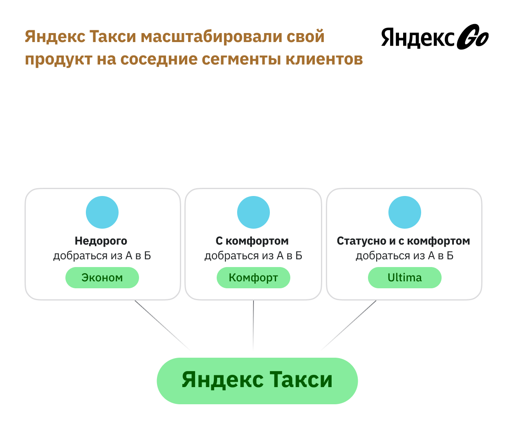
Yandex Taxi (Russia's Uber) started with the Economy tier for less affluent, less demanding customers. Over time it added neighboring segments — higher income, higher comfort and status requirements — by introducing tiers all the way up to Business and Elite. Each addition is a slide into a neighboring segment whose Job Graph differs from the previous one in just a few lower-level Jobs.
I currently count more than 50 mechanics for solving business problems. You'll meet all of them later in this book or in my training.
Teams usually make one of two mistakes when solving a business problem:
- They generate solution hypotheses without research and run off to validate them
- Or they start with research without a clear hypothesis about who they're talking to and about what — just hoping the research will surface something useful
The algorithm AJTBD proposes:
- Pick the business problem with the highest ROI — the actual point of growth. You find growth points either through unit economics or through awareness of where you can create value in the market.
- Hypothesize the Job Graphs of different segments and sub-segments — expert guess.
- From that expert list of segments and graphs, hypothesize which mechanics could plausibly solve your business problem.
- Run research — qualitative interviews, expert interviews, quantitative studies, competitive analysis — to find out which of the mechanics from step 3 actually apply.
- Generate hypotheses for which mechanics to apply, based on what the research uncovered.
Innovation is nothing more than the application of one or more value mechanics and product-strategy mechanics — and that is an algorithm.
iPhone, Google, Domklik, Aviasales — all of these products are effective and continuously increase value because they apply several strategic mechanics derived from their customers' Job Graphs.
Where AJTBD does and doesn't apply
Because the main tools for studying Jobs and Job Graphs are interviews and surveys, if a person doesn't consciously know something, we can't reliably surface it — and therefore we can't reliably hypothesize solutions to business problems whose Jobs sit in the unconscious.
People are unaware of large parts of their own behavior and motivation. For unconscious needs — like the need for status — it's pointless to ask "why did you do that?"; worse, it's dangerous, because what you'll get back is a confident-sounding rationalization that has nothing to do with the real driver.
Examples of products and Jobs where AJTBD has limited reach:
- Addictive products and behavior: as far as I can tell, AJTBD doesn't apply to products driven by strong dopaminergic loops — social networks, porn, gambling, alcohol, drugs — and doesn't describe how decisions about those products are made.
- Trauma-driven behavior: psychological trauma can drive irrational action — harming one's own health, relationships, work — in ways AJTBD interviews can't surface.
- Deep creative motivation: I haven't yet studied the decision principles of people at the developmental stage where creative self-realization becomes the dominant force.
- Status, reproduction, and other strong unconscious needs: I don't yet understand how AJTBD describes the brain's decision-making for strong needs the person doesn't consciously notice.
You'll learn more about unconscious behavior and false rationalization in the upcoming chapter on Needs.
Where this leads
You now have one of the central insights of AJTBD: value is what happens when you transform a customer's Job Graph in a direction the brain notices as more energy-efficient than the alternatives.
In the next chapter we'll go one level deeper and ask: what, exactly, is a Job? Because in everyday English the word "job" is loose — "my job is to grow conversion", "the customer's job is to find an apartment", "the brain's job is to predict" — and that looseness silently breaks the algorithm. We'll fix it with a specific eight-element structure, and the rest of the book will rest on it.
Bring it up. Most of the corrections to this methodology came from someone naming a product I hadn't accounted for.